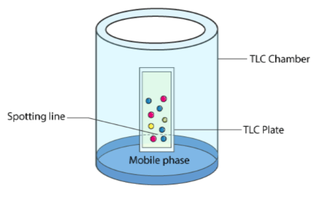
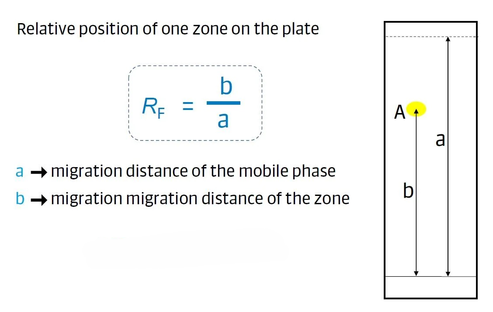
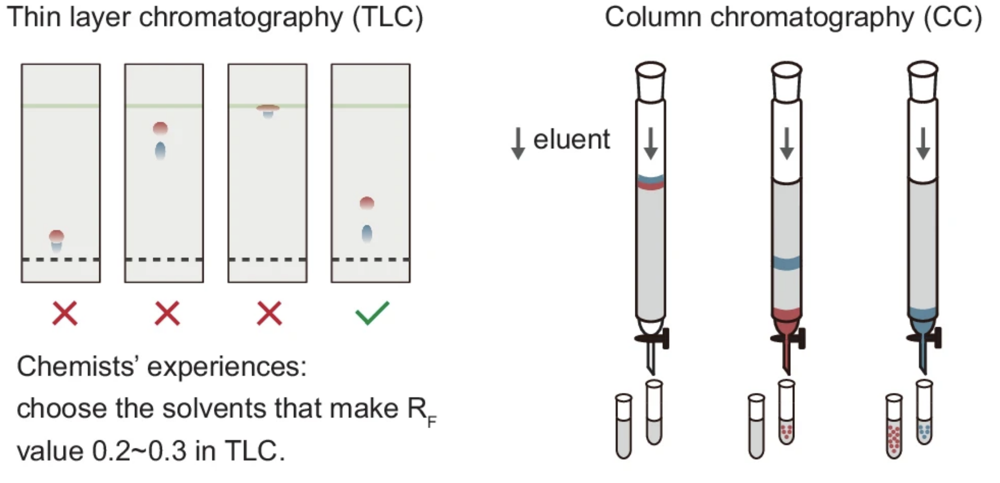
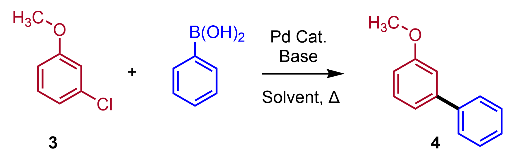

ML Class 3-5 Homework
Problem 1: Prediction of Rf value for TLC analysis
This homework aims at reproducing a recently published journal article: Xu, H. et al. High-throughput discovery of chemical structure-polarity relationships combining automation and machine-learning techniques. Chem (2022) doi:10.1016/j.chempr.2022.08.008.
Thin-layer chromatography (TLC) is a chromatography technique that separates components in mixtures.

Reference: https://en.wikipedia.org/wiki/Thin-layer_chromatography
The principle for TLC: The separation of compounds is due to the differences in their attraction to the stationary phase and differences in solubility in the solvent. As a result, the compounds and the mobile phase compete for binding sites on the stationary phase. Different compounds in the sample mixture travel at different rates due to the differences in their partition coefficients. Different solvents, or different solvent mixtures, gives different separation.
The retention factor (Rf) quantifies the results. It is the distance traveled by a given substance divided by the distance traveled by the mobile phase.

In normal-phase TLC, the stationary phase (typically silica gel) is polar. More polar compounds in a sample mixture interact more strongly with the polar stationary phase. As a result, more-polar compounds move less (resulting in smaller Rf) while less-polar compounds move higher up the plate (higher Rf). In addition, the composition of the mobile phase affects the Rf value. More polar mobile phase moves the compounds faster (higher Rf), and vice versa.
This TLC experiment can be done by chemists or recently by robots:
Manual: https://www.youtube.com/watch?v=ltT8vr5Wmz8
Automated: https://www.bilibili.com/video/BV1am4y1o7yE/?vd_source=9b8c50763ab14a904e31cd2732423a33
Our task is to predict the Rf value using the collected experimental data.
Q1: Download and understand the data
You can download the data from the link provided by the paper. Or you can directly use the data provided in the homework.
https://www.sciencedirect.com/science/article/pii/S2451929422004211
https://github.com/woshixuhao/ML-Prediction-for-Rf-values
Use the following code to read the excel file:
import pandas as pd
# Read the Excel file into a DataFrame
# put the excel file in the folder as your python file
df = pd.read_excel('TLC_dataset.xlsx')
# you may need to install "openpyxl" package to read excel file:
# pip install openpyxl
Explanation of the data in the excel file:
| COMPOUND_SMILES | H | EA | DCM | MeOH | Et2O | Rf |
|---|---|---|---|---|---|---|
| Molecule SMILES | Hexane | Ethyl acetate | Dichloromethane | Methanol | Diethyl ether | Rf value |
The mobile phase contains hexane, ethyl acetate, dichloromethane, methanol, and diethyl ether. The number in the excel means their volume ratio of these solvent. If you consider the polarity of these solvent, they are ranked as "Hexane < Diethyl Ether < Dichloromethane < Ethyl Acetate < Methanol". Thus, you can expect that, for the same molecule, a more polar eluent (containing more polar solvent) will move the molecule higher on the TLC plate (a larger Rf value).
Task: Plot Rf vs. solvent ratio
Pick 3 molecules (any 3 you like), and plotting their Rf value vs. the solvent ratio (similar to the Figure 5 in the original publication).
Q2: Build a neural network model to predict Rf
As described above, the Rf value is determined by the molecular structure and eluent solvent composition. Thus, we need to input these factors into the neural network, and the output of the neural network model is Rf value.
One simple way is to use molecular fingerprints to represent the molecule structure. Thus, we can use the following inputs for the model: .
The original paper includes other molecular descriptors which might help with improving the model accuracy. However, for the purpose of this homework, you don't need to do that. Of course, if you are interested, you can do similar things as the paper did.
Task 1: Correctly convert SMILES to fingerprints
You have different options of fingerprints to use in RDkit (Morgan, Feature Morgan, RDKit, Atom pairs, Topological torsions). We have tried Morgan fingerprints in class. You can try different ones in this this homework. Follow this link to learn more how to use the molecular fingerprints (https://greglandrum.github.io/rdkit-blog/posts/2023-01-18-fingerprint-generator-tutorial.html)
def smiles_to_fingerprint(smiles, fp_type='morgan', radius=3, fpSize=128):
mol = Chem.MolFromSmiles(smiles)
if mol is None:
# Return an array of zeros if the SMILES conversion fails.
return np.zeros(fpSize, dtype=int)
if fp_type == 'morgan':
generator = rdFingerprintGenerator.GetMorganGenerator(radius=radius, fpSize=fpSize)
elif fp_type == 'rdkit':
generator = rdFingerprintGenerator.GetRDKitFPGenerator(fpSize=fpSize)
elif fp_type == 'atompair':
generator = rdFingerprintGenerator.GetAtomPairGenerator(fpSize=fpSize)
elif fp_type == 'topological':
generator = rdFingerprintGenerator.GetTopologicalTorsionGenerator(fpSize=fpSize)
else:
raise ValueError(f"Unsupported fingerprint type: {fp_type}")
fp = generator.GetFingerprint(mol)
arr = np.zeros((fpSize,), dtype=int)
DataStructs.ConvertToNumpyArray(fp, arr)
return arr
You need to at least try two fingerprints.
Task 2: Prepare the dataset for training and testing
After you can convert the molecular SMILES to fingerprints, you concatenate the fingerprints with the solvent ratios to get .
Split the data randomly into training and testing data with a ratio of 0.8 for training and 0.2 for testing.
Task 3: Build a neural network model
Please use and modify the neural network model you have tried in ML Class 2.
Since the Rf value is within [0, 1], you can consider using sigmoid as the final output layer activation, since sigmoid function is also within [0,1]. This is what the paper used for the model output layer activation.
You can start with the model structure like follows:
# X.shape[1] is your X_i dimension
layers_config = [
(X.shape[1], 64, 'relu'),
(64, 32, 'relu'),
(32, 1, 'sigmoid')]
You can use a linear output (without activation). You will possibly obtain output values >1 or <0. You can set >1 as 1 and <0 as 0 with the following function during model prediction.
Task 4: Train the model
Try the model training as you did in HW2. The loss function should be mean squared error (MSE) loss:
Note: in HW2, when we have sigmoid activation as the output layer and binary cross-entropy loss, we specially handle the gradient. But you don't need to do that here.
Please use mini-batch training approach. Play with the learning rate and training epoch to find the best performance.
Q3: Evaluate the model performance
After you have successfully run through Q2, the purpose of Q3 is to evaluate and understand the model.
Task 1: Compare the performance of different fingerprints
Compare fingerprints types, length, (and radius). You at least try 2 types of fingerprints and 3 other fingerprint settings.
Task 2: Compare sigmoid and linear output activation
Compare sigmoid and linear output layer activation.
For linear activation, you don't need to use above as the activation function. Just leave no activation like a typical linear regression task. The model should automatically (if correctly trained) know the values sitting in the range of [0,1]. Just use to make sure the output value is within [0,1]
Task 3: Compare different model structure
Compare number of layers and number of nodes for neural network to see how they affect the model performance.
Q4: Case studies
Using the best model (most accurate for testing dataset) you obtained above, try the following tasks:
Task 1: Understand how eluent polarity (composition) affects Rf value
Pick 3 molecules (any 3 you like) from the testing dataset. Plotting the experimental and predictive Rf value at different eluent compositions. (similar to the Figure 5 in the original publication)
Task 2: Find the suitable eluent to separate a mixture
Typically, in order to have a good separation performance of a mixture, we need to find a suitable eluent composition that the Rf value of the target compound is within 0.2~0.3, and other compounds should have Rf value difference >0.1 compared to target compound. Using this optimized eluent composition for the following column chromatography, we will often get good separation results.

Consider the following two widely used reactions in drug synthesis, we would like separate the product from the reaction crude.
Reaction 1: Buchwald-Hartwig cross-coupling reaction
Assume the reaction crude (mixture after the reaction) only contains reactant 1 and product 2. Find the right the eluent composition to separate 2 from 1.

Reference: https://en.wikipedia.org/wiki/Buchwald%E2%80%93Hartwig_amination
Reaction 2: Suzuki-Miyaura cross-coupling reaction
Similarly, assume the reaction crude (mixture after the reaction) only contains reactant 3 and product 4. Find the right the eluent composition to separate 4 from 3.

Reference: https://en.wikipedia.org/wiki/Suzuki_reaction
If you don't have ChemDraw software installed, you can use the online molecular drawing tool to draw molecule and obtain its SMILES.
https://www.rcsb.org/chemical-sketch
https://molview.org/ ---- Draw the molecule, then click "Tools-->Information Card"
Problem 2: Reaction condition optimization
Problem background
In many chemical reactions, one of the main challenges is that undesired side reactions can occur, reducing both the yield and selectivity of the target product. For example, in C–C Suzuki coupling reactions, the desired transformation is the palladium-catalyzed cross-coupling of an aryl halide (A) with an arylboronic acid (B) to form a biaryl product (R). However, under basic aqueous conditions and elevated temperatures, the boronic acid (B) is prone to protodeboronation, a side reaction in which the B–C bond is cleaved to form the corresponding arene (S). This undesired pathway consumes the starting material B and reduces the efficiency of the main coupling reaction.
To improve the yield of the desired product, reaction conditions such as temperature, reaction time, and catalyst concentration must be carefully optimized to accelerate the main reaction while minimizing the rate of the side reaction.
Problem statement
In this problem, we aim to maximize the yield of product R in a simplified kinetic system where two competing reactions occur. These reactions are governed by classical chemical kinetics and involve a desired transformation of reactants A and B to product R, alongside a competing side reaction that consumes reactant B to form an undesired byproduct S. Our goal is to maximize the yield of R.
Reaction parameters for this reaction:
-
: Initial concentration of reactant A.
-
: Initial concentration of reactant B.
-
: Pre-exponential factor for the desired reaction.
-
Activation energy for the formation of R.
-
: Pre-exponential factor for the side reaction.
-
: Activation energy for the side reaction.
The reaction conditions can be selected within the following range:
| Variables | Range | Unit |
|---|---|---|
| Temperature | [30.0, 110.0] | °C |
| Reaction time | [10.0, 100.0] | min |
| Catalyst Concentration | [0.835, 4.175] | mM |
Q1: Calculating yield based on reaction kinetics
As we learned in the reaction engineering course, we can solve such system using the ODE (ordinary differential equation). Here, we give the following ODE function as follows:
import numpy as np
from scipy.integrate import odeint # 你可能需要装scipy, pip install scipy
# Define the kinetic reaction model function
def kinetics(condition):
"""
Computes the yield of the desired product in the competing side reaction.
Parameters:
- condition: A list containing [T, tre, Ccat] where:
- T: Temperature (°C)
- tre: Reaction time (min)
- Ccat: Catalyst concentration (mM)
Returns:
- yield_R: The yield of the desired product R
"""
# Initial concentrations for reactants (in molarity, M)
CA0 = 0.167 # Initial concentration of reactant A (M)
CB0 = 0.250 # Initial concentration of reactant B (M)
# Reaction parameters for the main reaction and the competing side reaction
AR = 3.1e7 # Pre-exponential factor for the main reaction (L^(1/2) mol^(−3/2) s^(−1))
EAR = 55 # Activation energy for the main reaction (kJ/mol)
EAS = 100 # Activation energy for the side reaction (kJ/mol)
As = 1e12 # Pre-exponential factor for the side reaction (L^(1/2) mol^(−3/2) s^(−1))
# Unpack the conditions: Temperature (°C), residence time (min), and catalyst concentration (mM)
T = condition[0]
tre = condition[1]
Ccat = condition[2]
# Unit conversions:
T = T + 273.15 # Convert temperature from Celsius to Kelvin
tre = tre * 60 # Convert residence time from minutes to seconds
Ccat = Ccat / 1000 # Convert catalyst concentration from mM to g/L
# Compute the rate constants using the Arrhenius equation
R = 8.314 # gas constant R J/(mol*K)
kr = Ccat ** 0.5 * AR * np.exp(-EAR / (T * R / 1000)) # Rate constant for the main reaction
ks = As * np.exp(-EAS / (T * R / 1000)) # Rate constant for the side reaction
# Define the system of ODEs representing the reaction kinetics
def reaction(w, time):
# Unpack concentrations: a = [A], b = [B], c = [Product R], d = [Side product S]
a, b, c, d = w
# Define the rate of change of each species:
f1 = -kr * a * b # Consumption rate of reactant A (only in the main reaction)
f2 = -kr * a * b - ks * b # Consumption rate of reactant B (in both main and side reactions)
f3 = kr * a * b # Formation rate of product R (main reaction)
f4 = ks * b # Formation rate of side product S (side reaction)
return [f1, f2, f3, f4]
# Create a time array for numerical integration
# The simulation runs from 0 to tre/10 seconds with small time steps of 0.001 s.
# Note: Using tre/10 is a modeling choice that may represent a fraction of the full residence time.
time = np.arange(0, tre / 10, 0.001)
# Solve the ODE system with the given initial conditions:
# [A] starts at CA0, [B] starts at CB0, and both products [R] and [S] start at 0.
re = odeint(reaction, (CA0, CB0, 0.0, 0.0), time)
# Extract the final concentration of product R from the simulation results.
# re[-1, :] gives the last time point; the third element (index 2) corresponds to [R].
cr = re[-1, :][2]
# Compute the yield of product R relative to the initial concentration of reactant A
y = cr / CA0
# Round the computed yield to 4 decimal places
yield_R = round(y, 4)
return yield_R
Task 1: Plot the reaction yield vs. reaction time when temperature is 60 °C and catalyst concentration is 3 mM.
Task 2: Plot the reaction yield vs. temperature when reaction time is 40 min and catalyst concentration is 3 mM.
Task 3: Plot the reaction yield vs. catalyst concentration when temperature is 60 °C and reaction time is 40 min.
Q2: Construct Gaussian process using Matérn52 kernel
In class, we learned Radial Basis Function (RBF) Kernel. In this problem, we use the Matérn-52 kernel. The Matérn-52 kernel function is given by:
where:
-
is the Euclidean distance between two points.
-
(length scale) controls how far the influence of each training point extends.
-
(signal variance) determines the vertical variation of the function.
import numpy as np
from scipy.spatial.distance import cdist
def matern52_kernel(x1, x2, sigma_f, length_scale):
"""
Compute the Matérn 52 kernel between two sets of points.
Parameters:
- X1: First set of points (N1 x d).
- X2: Second set of points (N2 x d).
- length_scale: Controls the smoothness of the function.
- sigma_f: Signal variance (determines function magnitude).
Returns:
- Kernel matrix of shape (N1 x N2).
"""
if x1.ndim == 1:
x1 = x1.reshape(-1, 1)
if x2.ndim == 1:
x2 = x2.reshape(-1, 1)
dists = cdist(x1, x2, 'euclidean')
term1 = (1 + np.sqrt(5) * dists / length_scale + (5 * dists ** 2) / (3 * length_scale ** 2))
matern52 = sigma_f ** 2 * term1 * np.exp(-np.sqrt(5) * dists / length_scale)
return matern52
Task: Use the code in Section "Demo: using GP to regress a function" in the “BayesianOpt.ipynb” demonstrated in class. Replace the kernel function from RBF kernel to Matérn-52 kernel, and compare their difference in the task of regressing the noisy y=sin(x).
The difference between the two kernels:
The RBF kernel enforces high smoothness, while the Matérn 52 kernel provides a compromise between smoothness and flexibility by allowing for rougher behavior in the modeled function.
Q3: Try the Design of Experiments sampling method
As we learned in class, for Bayesian optimization, we need to start with some data points. In the demo code provided in class, we can use randomly sampled data points or evenly distributed data points. In this problem, we would like to initialize the Bayesian optimization using Design of Experiments (DOE) methods. DOE is theoretically more reliable way to sample the unknown space. You can use the DOE method as the following code:
# pip install pyDOE before using this code
import numpy as np
from pyDOE import lhs # install pyDOE
def generate_doe(bounds, num_samples):
"""
Generate DOE samples using Latin Hypercube Sampling (LHS) and optionally evaluate them.
Parameters:
bounds : np.ndarray
A 2D array of shape (n_parameters, 2) where each row specifies the lower and upper
bound for a parameter.
num_samples : Number of DOE samples to generate.
Returns:
X : np.ndarray
DOE sampled points scaled to the provided bounds.
"""
num_params = bounds.shape[0]
# Generate normalized LHS samples (each value in [0, 1])
normalized_samples = lhs(num_params, samples=num_samples)
# Scale samples to the actual search space defined by bounds
X = normalized_samples * (bounds[:, 1] - bounds[:, 0]) + bounds[:, 0]
return X
# Define parameter search space (each row: [lower_bound, upper_bound])
bounds = np.array([
[30, 110], # Temperature (°C)
[10, 100], # Reaction time (min)
[0.835, 4.175] # Catalyst concentration (mM)
])
# Determine the number of parameters and initial samples
num_params = bounds.shape[0]
num_initial_samples = 5
# Generate DOE sample points
X_train = generate_doe(bounds, num_initial_samples)
Task: Try this sampling method, and plotting the sampled points in the 3D plot (The code is already provided in the jupyter notebook.)
You may notice the sampled points are different each time. This is because:
Latin Hypercube Sampling (LHS) is inherently a stochastic (random) method, meaning it generates random sample points that are spread out evenly over the parameter space. As a result, each time you call the LHS function without fixing the random seed, you'll get different sample points.
Q4: Bayesian Optimization to find the reaction condition to maximize the yield of species R
Follow the sample code discussed in class, you can set up a Bayesian Optimization using the Expected Improvement (EI) acquisition function.
Task: Your main job is understanding the behavior of optimization on the final optimal condition and yield.